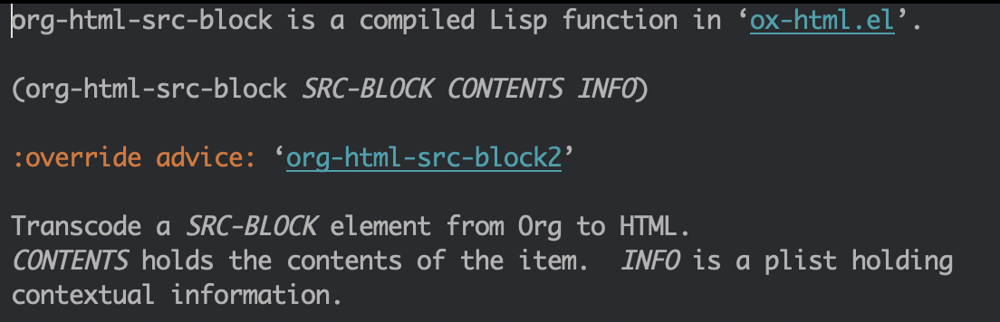

使用 highlight.js 高亮 Org mode
背景
Org mode 代码的默认导出使用的是 htmlize 效果不是很好看，而 highlight.js 却有各种各样的配色，但是 Org mode 却不支持。下面解决的问题就是如何通过 highlight.js 来高亮 org mode 导出的 HTML 代码片段。
方案
由于 org mode 在 export 代码的时候不支持 highlight.js，而使用 htmlize 来高亮又不是很好看。所以看了下 ox-html.el 的代码改了部分的内容，使得导出的 html 中代码能够通过 highlight.js 来高亮。
- M-x customize 然后输入 htmlize
- 找到 'Org Html Htmlize Output Type' 并且改变它的值为 css
- 找到 elpa/org 目录下的 ox-html.el
在 ox-html.el 下找到 'org-html-src-block' 并且修改最后一行为
(format "<pre><code class=\"%s\"%s>%s</code></pre>" lang label code)将下面的代码放到你的配置文件中，我的是放到了 org-html-head-extra 中。
<link href="http://apps.bdimg.com/libs/highlight.js/9.1.0/styles/default.min.css" rel="stylesheet"> <script src="http://apps.bdimg.com/libs/highlight.js/9.1.0/highlight.min.js"></script> <script>hljs.initHighlightingOnLoad();</script>
问题
上面的方法基本能够解决问题，但是处理方式却很不好。首先，它对 org library 做了 hack，如果下次更新又需要手动再改动。 另外，难于发现问题。一个推荐的处理方式是不改变原来库的行为模式，改用 advice 来处理：
(defun org-html-src-block2 (src-block _contents info)
"Transcode a SRC-BLOCK element from Org to HTML.
CONTENTS holds the contents of the item. INFO is a plist holding
contextual information."
(if (org-export-read-attribute :attr_html src-block :textarea)
(org-html--textarea-block src-block)
(let ((lang (org-element-property :language src-block))
(code (org-html-format-code src-block info))
(label (let ((lbl (and (org-element-property :name src-block)
(org-export-get-reference src-block info))))
(if lbl (format " id=\"%s\"" lbl) ""))))
(if (not lang) (format "<pre><code class=\"example\"%s>\n%s</code></pre>" label code)
(format "<div class=\"container\">\n%s%s\n</div>"
;; Build caption.
(let ((caption (org-export-get-caption src-block)))
(if (not caption) ""
(let ((listing-number
(format
"<span class=\"listing-number\">%s </span>"
(format
(org-html--translate "Listing %d:" info)
(org-export-get-ordinal
src-block info nil #'org-html--has-caption-p)))))
(format "<label class=\"org-src-name\">%s%s</label>"
listing-number
(org-trim (org-export-data caption info))))))
;; Contents.
(format "<pre><code class=\"%s\"%s>%s</code></pre>"
lang label code))))))
(advice-add 'org-html-src-block :override 'org-html-src-block2)
简单解释，就是写一个函数 org-html-src-block2 来覆盖原来的函数。我们 C-h f 看下原来的函数：

可以看到它已经被 advice 处理过了。